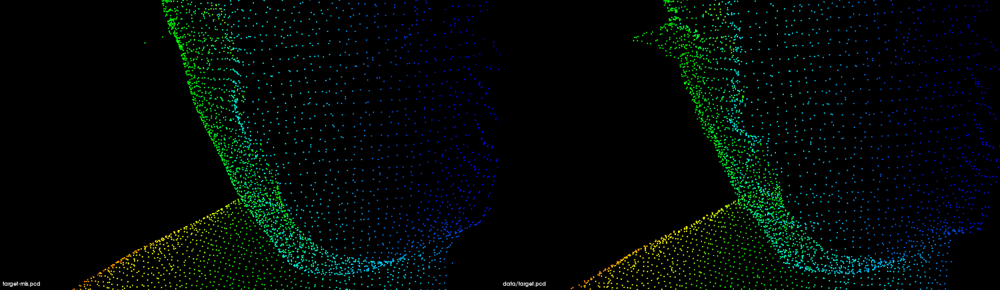

点云曲面重建¶
曲面重建技术在逆向工程、数据可视化、机器视觉、虚拟现实、医疗技术等领域中得到了广泛的应用 。 例如，在汽车、航空等工业领域中，复杂外形产品的设计仍需要根据手工模型，采用逆向工程的手段建立产品的数字化模型，根据测量数据建立人体以及骨骼和器官的计算机模型，在医学、定制生产等方面都有重要意义 。
除了上述传统的行业，随着新兴的廉价 RGBD 获取设备在数字娱乐行业的病毒式扩展，使得更多人开始使用点云来处理对象并进行工程应用 。 根据重建曲面和数据点云之间的关系，可将曲面重建分为两大类：插值法和逼近法。前者得到的重建曲面完全通过原始数据点，而后者则是用分片线性曲面或其他形式的曲面来逼近原始数据点,从而使得得到的重建曲面是原始点集的一个逼近曲面。
关联知识：
Search、KdTree、Octree
基于多项式重构的平滑和法线估计¶
本教程说明如何使用移动最小二乘（MLS）曲面重构方法来平滑和重采样噪声数据。
使用统计分析很难消除某些数据不规则性（由较小的距离测量误差引起）。要创建完整的模型，必须考虑光滑的表面以及数据中的遮挡。在无法获取其他扫描的情况下，一种解决方案是使用重采样算法，该算法尝试通过周围数据点之间的高阶多项式插值来重新创建表面的缺失部分。通过执行重采样，可以纠正这些小的错误，并且可以将多个扫描记录在一起执行平滑操作合并成同一个点云。

在上图的左侧，我们在包含两个配准点云的数据集中看到了配准后的效果及表面法线估计。由于对齐错误，所产生的法线有噪声。在右侧，使用移动最小二乘法对表面法线估计进行平滑处理后，在同一数据集中看到了该效果。绘制每个点的曲率，作为重新采样前后特征值关系的度量，我们得到：

代码实现¶
创建文件：resampling.cpp
准备资源：./data/target.pcd
编译执行：resampling ./data/target.pcd
#include <pcl/point_types.h>
#include <pcl/io/pcd_io.h>
#include <pcl/kdtree/kdtree_flann.h>
#include <pcl/surface/mls.h>
#include <pcl/visualization/cloud_viewer.h>
int
main(int argc, char **argv) {
// Load input file into a PointCloud<T> with an appropriate type
pcl::PointCloud<pcl::PointXYZ>::Ptr cloud(new pcl::PointCloud<pcl::PointXYZ>());
// Load bun0.pcd -- should be available with the PCL archive in test
pcl::io::loadPCDFile(argv[1], *cloud);
// Create a KD-Tree
pcl::search::KdTree<pcl::PointXYZ>::Ptr tree(new pcl::search::KdTree<pcl::PointXYZ>);
// Output has the PointNormal type in order to store the normals calculated by MLS
pcl::PointCloud<pcl::PointNormal> mls_points;
// Init object (second point type is for the normals, even if unused)
pcl::MovingLeastSquares<pcl::PointXYZ, pcl::PointNormal> mls;
mls.setComputeNormals(true);
// Set parameters
mls.setInputCloud(cloud);
mls.setPolynomialOrder(2);
mls.setSearchMethod(tree);
mls.setSearchRadius(0.03);
// Reconstruct
mls.process(mls_points);
pcl::visualization::CloudViewer viewer("Cloud Viewer");;
viewer.showCloud(cloud);
while (!viewer.wasStopped()) {
}
// Save output
pcl::io::savePCDFile("target-mls.pcd", mls_points);
}
实现效果¶
执行命令：pcl_viewer -multiview 1 target-mls.pcd data/target.pcd

可以看到左右两张侧脸，左边是进行表面重建后的点云，相较于右边未重建前更加平滑。